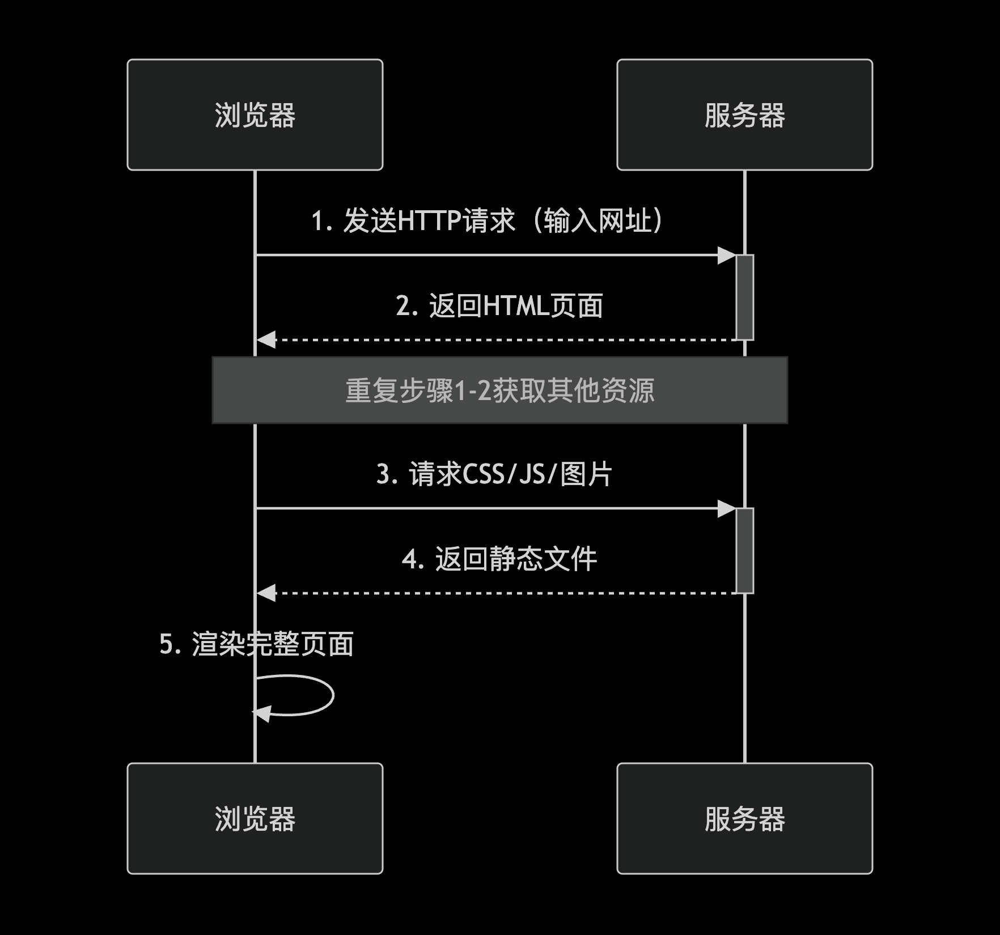
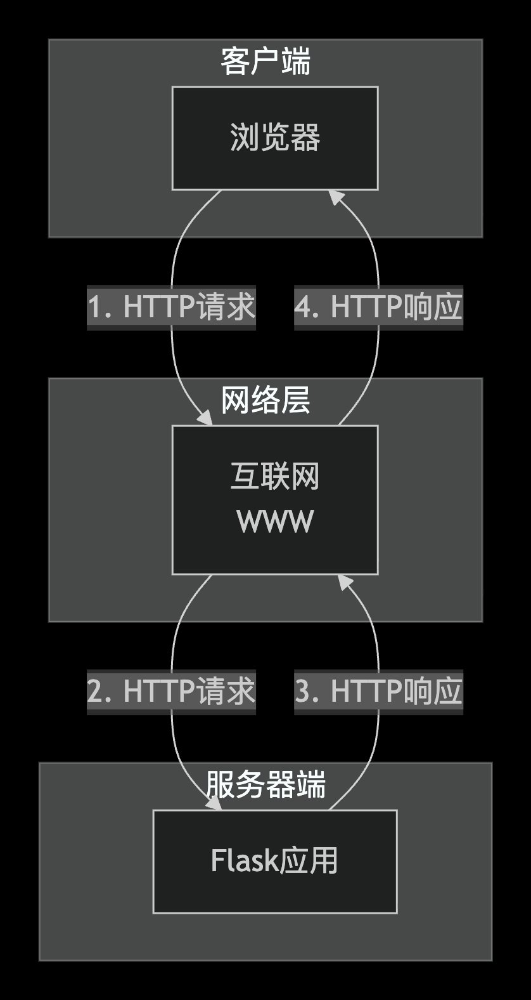
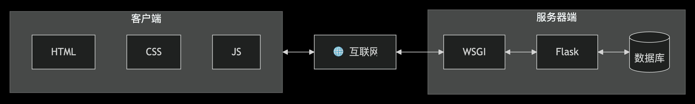
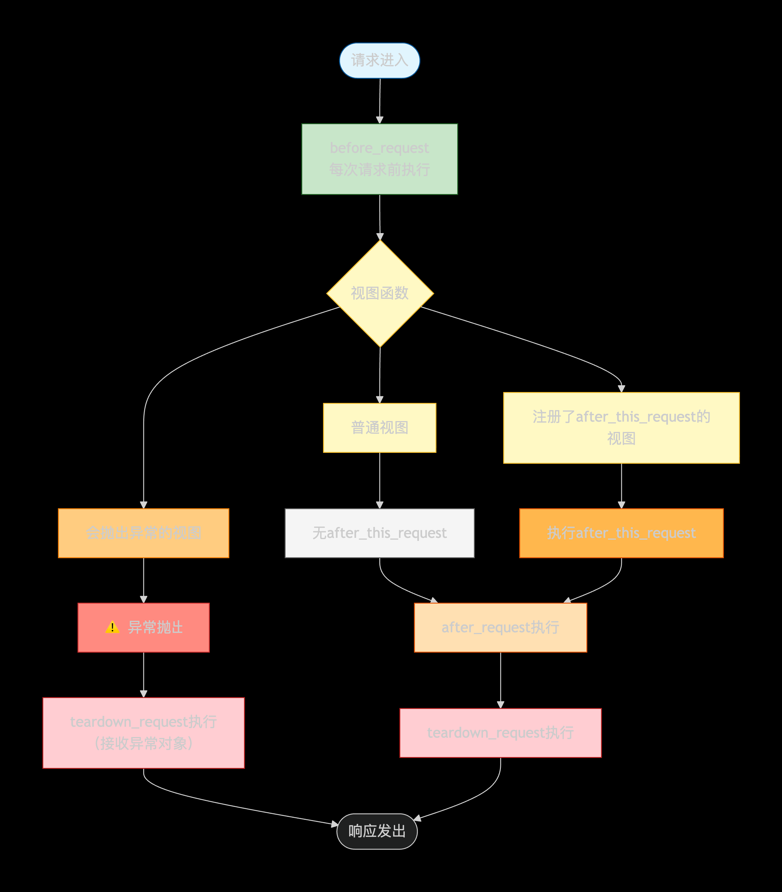
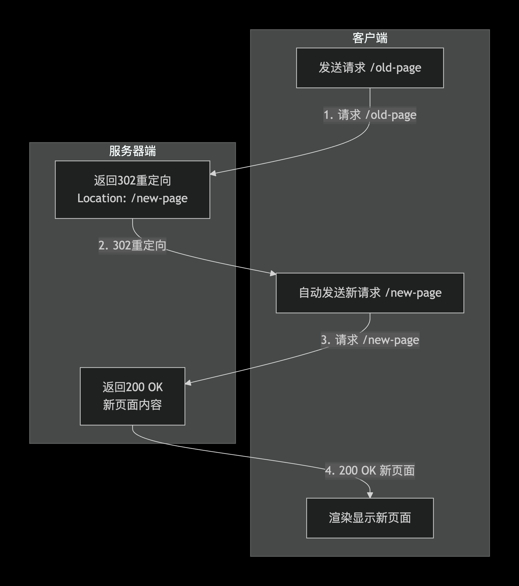

《WEB应用开发（python）》
1 初识Flask
Flask 是一个使用 Python 编写的轻量级 Web 框架，其核心设计 philosophy 是“微内核”与高度灵活，仅提供路由和模板等最基础的功能，将数据库、表单等高级特性交由强大的第三方扩展生态实现，因此非常适合快速构建小型项目或微服务 。
与 Django 这种“全家桶”式框架和主打高性能异步 API 的 FastAPI 相比，Flask 在保留核心简洁的同时提供了极致的灵活性，让开发者可以像吃“自助餐”一样自由选择和组合所需的组件 ；
开发环境搭建
pdm安装
参考 pdm官方文档
Linux/Mac
$curl -sSL https://pdm-project.org/install-pdm.py | python3 -
Windows
powershell -ExecutionPolicy ByPass -c "irm https://pdm-project.org/install-pdm.py | py -"
验证安装成功
$pdm --version
环境初始化
$mkdir pdm-test
$cd pdm-test
$pdm init

pyproject.toml文件

安装依赖
$pdm add flask
Flask的核心依赖
- Werkzeug WSGI 工具集，是 Flask 的“发动机”。它负责处理路由、请求和响应对象的封装、以及调试服务，是框架最核心的部分。
- Jinja2 模板引擎，是 Flask 的“显示层”。它让你能在 HTML 文件中使用动态数据和逻辑（如循环、判断），最终渲染出完整的网页。
- MarkupSafe 伴随 Jinja2 工作，负责转义不可信输入，防止模板注入攻击，保障应用安全。
- ItsDangerous 负责安全地签名数据，用于保证数据完整性，最典型的应用就是保护 Flask 的会话（session）cookie。
- Click 一个命令行框架，用于编写命令行应用。它支撑起了 flask 命令，让你可以方便地运行开发服务器、管理数据库等。
下载安装IDE
创建程序实例
from flask import Flask
app = Flask(__name__)
@app.route('/') #注册路由启动启动
#视图函数
def index():
return '<h1>Hello,World!</h1>'
启动服务器
$pdm run flask run
关闭服务器
ctrl/cmd + c
注册路由
URI（统一资源标识符）它用于唯一标识某个资源，但不一定要告诉你怎么找到它；URL是URI的一种，不仅标识资源，还提供了访问该资源的网络位置和方式。
URL（统一资源定位符）指定了互联网上某个资源（比如网页、图片、视频）的位置和访问方式，相当于每个网站或文件在网上的“门牌号”。
客户端与服务器交互过程

1.用户输入网址 → 浏览器发起请求
2.DNS解析 → 把域名（如 google.com）转成 IP 地址
3.发送HTTP请求 → 浏览器向服务器要东西
4.服务器处理 → 运行代码（如Flask路由）、查询数据库
5.返回HTTP响应 → 服务器把结果（HTML/JSON）发回
6.浏览器渲染 → 解析HTML、CSS、JS，显示网页
装饰器
@app.route() #负责管理url与函数之间的映射
- 绑定多个url
@app.route("/ping")
@app.route("/pong")
def double():
return"<p>hello ping and pong!</p>"
#打开浏览器分别输入两个url，查看绑定结果。
- 动态url
@app.route("/hello/<name>")
def hello(name):
return f"<p>hello {name}!</p>"
#为name设置默认值
@app.route("/hello/defaults={'name':'human'}")
def hello(name):
return f"<p>hello {name}!</p>"
开发服务器 Werkzeug
WSGI 是 Web Server Gateway Interface（Web 服务器网关接口）的缩写，它是 Python 中定义的一种规范或协议，用于解耦 Web 服务器和 Web 应用，让它们能够相互通信。
- 程序自动发现机制
- 从执行命令当前目录中寻找app.py 或者 wsgi.py模块，或在app或wsgi包的构造文件中寻找名为app或application的程序实例，或寻找名为create_app或make_app的程序实例创建函数。
- 从命令行参数 --app或系统环境变量FLASK_APP对应的模块名或导入路径中寻找名为app/application的程序实例，或名为create_app/make_app的程序实例创建函数。
示例
$ flask run --app=hello run #指定app名称
$ export FLASK_APP = hello #设置环境变量
如何实例名称不是app或applicaiton 则需要显式指定FLASK_APP=hello:myapp
推荐大家将单脚本程序命名为app.py，程序实例命名为app或application。
-
调试模式
$ flask run --debug
2.1 调试器

2.2 重载器
内置重载器stat
或用于检测文件变动的python库watchdog$pdm add --dev watchdog -
服务器对外可见
$ flask run --host=0.0.0.0 -
改变默认端口
$flask run --port=8000
使用pycharm运行服务器

Flask Shell
启动 python shell $ flask shell
项目配置
配置变量：Flask类的config属性 app.config或app.config.update()方法
示例：
app.config['ADMIN_NAME'] = 'Peter'
或
app.config.update(ADMIN_NAME = 'Peter')
视图、url、端点
避免写死url，Flask提供url_for()函数生成url。在调用时，传入的第一个参数为视图（view）的端点（endpoint）。
示例：
@app.route("/hello/<name>")
def hello(name="human"):
return f"<p>hello {name}!</p>"
@app.route('/getname')
def getUrl():
url = url_for("hello",name="from_server")
return "<p>get url:{url}</p>"
一个url只对应一个视图函数。
尝试以下代码看看：
@app.route("/pong")
def first():
return"<p>first!</p>"
@app.route("/pong")
def second():
return"<p>second!</p>"
打印所有路由信息
$ flask routes
Flask命令
Flask通过依赖包Click内置了一个CLI系统。例如，flask run。
自定义命令
import click
@app.cli.command()
def echo_ping():
click.echo("pong")
Terminal
$ flask echo_ping
2 Flask与Http
请求-响应循环

具体工作流程

http请求
url的组成部分
以这个url为例，https://helloflask.com/hello?name=grey
| https:// | 为协议字符串，指定了传输协议 |
|---|---|
| helloflask.com | 为服务器的主机名（域名） |
| hello？name=grey | 要获取的资源路径（path） |
请求报文
GET /hello?name=grey HTTP/1.1
Host: helloflask.com
User-Agent: Mozilla/5.0 (Windows NT 10.0; Win64; x64) AppleWebKit/537.36
Accept: text/html,application/xhtml+xml,application/xml;q=0.9,image/webp,*/*;q=0.8
Accept-Language: zh-CN,zh;q=0.8,en-US;q=0.5,en;q=0.3
Accept-Encoding: gzip, deflate
Connection: keep-alive
Upgrade-Insecure-Requests: 1
（空行）
（请求体）
| 组成说明 | 请求报文内容 |
|---|---|
| 请求行 | GET /hello?name=grey HTTP/1.1 |
| 请求头 | 第二行到空行前 |
| 请求体 | get方法一般为空，如果post表单则为表单 |
常见的http方法
| 方法 | 说明 |
|---|---|
| GET | 获取资源 |
| POST | 创建或更新资源 |
| PUT | 创建或替换资源 |
| DELETE | 删除资源 |
request对象
Flask 提供的request对象，请求解析和响应封装实际上由Werkzeug完成的，Flask子类化了Werkzeug的request和respond对象，并添加了特定功能。
request对象提供的属性
@app.route('/request')
def req():
path = request.path
full_path = request.full_path
host = request.host
host_url = request.host_url
base_url = request.base_url
url = request.url
url_root = request.url_root
print(path,full_path,host,host_url,base_url,url,url_root)
return 200
request对象常用属性、方法
| 属性/方法 | 类型 | 说明 | 示例 |
|---|---|---|---|
| request.method | 字符串 | HTTP 请求方法（GET/POST/PUT 等） | GET |
| request.args | ImmutableMultiDict | URL 查询参数（即 ?key=value 部分） | request.args.get('name') |
| request.form | ImmutableMultiDict | 表单数据（POST 表单，enctype=application/x-www-form-urlencoded） | request.form['username'] |
| request.values | CombinedMultiDict | args + form 合并（先找 args，再找 form） | request.values.get('key') |
| request.json | 字典/列表 | JSON 数据（POST 的 application/json 请求体） | request.json.get('key') |
| request.data | 字节串 | 原始请求体（当无法解析为表单或 JSON 时） | request.data.decode('utf-8') |
| request.files | ImmutableMultiDict | 上传的文件（enctype=multipart/form-data） | request.files['avatar'] |
| request.cookies | 字典 | 请求中的 Cookies | request.cookies.get('session_id') |
| request.endpoint | 字符串 | 请求对应的端点名（即视图函数名） | 'index' |
| request.query_string | 字节串 | 原始查询字符串 | b'x=1&y=2' |
| request.is_json | 布尔值 | 请求体是否为 JSON | if request.is_json: |
| request.get_json() | 方法 | 解析 JSON 数据（与 json 类似，但可设参数） | request.get_json(silent=True) |
Werkzeug的MultiDict类是字典的子类，主要处理同一个key对应多个value的情况。可以通过getlist()方法来获取文件对象列表。
url传入参数的方法
- ?key=value 例如，?name = grey
- 路径参数 例如，hello/grey
获取url中的查询字符串
from flask import Flask, request
@app.route('/hello')
def hello():
name =request.args.get('name','human')
return f'<h1>hello,{name}!</h1>'
#输入 http://localhost:5000/hello?name=grey 进行验证
当我们从request对象的类型为 MultiDict,ImmutableMultiDict属性中直接将key作为索引获取数据时，【如，request.args['name']】，如果没有对应的key，会返回http 400错误响应。
验证
@app.route('/none')
def none():
name = request.args['name']
return '<h1>not found.</h1>'
设置监听http方法
@app.route('/watch',methods=['GET','POST'])
def watch():
if request.method == 'GET':
return '处理get方法'
else:
return '处理post方法'
快捷路由装饰器
-app.get
-app.post
-app.delete
-app.put
url处理
@app.route('/goback/<int:year>') #<转换器：变量名>将year转换为整型
def goback(year):
return f'welcome to {2026-year}!'
flask内置变量转换型
-string
-int
-float
-path
-any
-uuid
any的用法
@app.route('/colors/<any:(blue,green,red):color>)')
def color(color):
return f'<h3>{color}</h3>'
#输入除了blue，gree，red意外的词进行验证
请求钩子
请求钩子/回调函数 帮助我们对请求进行预处理或后处理。
钩子执行顺序

钩子的应用
- before_request :与数据库建立连接,记录某些用户数据
- after_request:进行数据库操作
-teardown-request:关闭数据库连接
示例
@app.before_request
def do_something():
print('do something before each request')
http响应
http响应报文
HTTP/1.1 200 OK #状态行
Content-Type: text/html; charset=utf-8 #响应体（直到空行前）
Set-Cookie: username=admin; Path=/; HttpOnly
Set-Cookie: theme=dark; Max-Age=3600
Content-Length: 56
Server: Werkzeug/2.3.0
Date: Mon, 01 Mar 2026 10:30:25 GMT
（空行）
<h1>登录成功</h1> #响应体
<p>欢迎回来，admin！</p>
http常见状态码
| 类型 | 状态码 | 原因语句 | 说明 |
|---|---|---|---|
| 成功 | 200 | OK | 请求被正常处理 |
| 重定向 | 301 | Moved Permanently | 永久重定向 |
| 客户端错误 | 404 | Not Found | 服务器上无法找到请求的资源或url无效 |
| 服务器错误 | 500 | Internet Server Error | 服务器内部发生错误 |
response对象
大多数情况下，我们只负责返回主题内容，而响应报文中的大部分由服务器处理。视图函数返回可以返回最多由三个元素组成的元组：响应主体、状态码、首部字段
生成响应对象
@app.route('/response')
def test_response():
return'<h1>make response</h1>',201
#重定向302
@app.route('/redirect')
def test_redirect():
return '',302,{'Location':'http://localhost'} #响应体 状态码 响应头
手动生成响应对象
from flask import make_response
@app.route('/response')
def test_response():
response = make_response('<h1>make response</h1>')
return response
response类常用的属性和方法
| 属性 | 类型 | 说明 | 示例 |
|---|---|---|---|
| status | str | HTTP状态码及描述 | response.status = '200 OK' |
| status_code | int | HTTP状态码数字 | response.status_code = 404 |
| headers | dict-like | 响应头字典 | response.headers['Content-Type'] = 'application/json' |
| content_type | str | 内容类型（快捷方式） | response.content_type = 'text/html' |
| 方法 | 参数 | 返回值 | 说明 | 示例 |
|---|---|---|---|---|
| set_cookie() | key, value, **options | None | 设置Cookie | response.set_cookie('username', 'admin', max_age=3600) |
| delete_cookie() | key, path='/', domain=None | None | 删除Cookie | response.delete_cookie('username') |
| set_data() | value | None | 设置响应体数据 | response.set_data('新内容') |
示例：
from flask import make_response
@app.route('/redirect')
def test_redirect():
response = make_response()
response.status_code = 302
response.location = 'http://localhost'
return response
重定向

redirect()函数
@app.route('/redirect2')
def func_redirect():
return redirect('http://localhost') #默认状态码 302 临时重定向
@app.route('/hi')
def hi():
return redirect(url_for('hello'))
生成错误响应
大多数情况下，flask会自动处理常见的错误响应。如果你想手动返回错误响应，更方便的方法是使用flask提供的abort函数。
from flask import abort
@app.route('/coffee')
def brew_coffee():
abort(418)
@app.route('/answer')
def answer():
abort(404,description='There is no answer.')
418错误响应由ietf（互联网工程任务组）在1998年愚人节发布的htcpcp(hyper text coffee pot control protocol）中定义，当一个控制茶壶的htcpcp收到煮咖啡的指令时应当回传此错误响应。
设置响应格式
MIME类型是一种用来表示文件类型的标准，它与文件拓展名相对应，可以让客户端区分不同的内容类型，并执行不同的操作。一般的格式为“类型名/子类型名”，其中子类型名一般为文件拓展名，如png图片：image/png。
常用数据格式
- 纯文本：text/plain
- html：text/html
- xml：application/xml
- json：application/json
设置mime类型
@app.route('/foo')
def foo():
response = make_response('hello,world!')
response.mimetype = 'text/plain'
#或 response.headers['Content-Type'] = 'text/xml;charset=utf-8'
return response
jsonify()函数
@app.route('progress')
def get_progress():
data = {'date':'2021/9/14','progress':"20%"}
return jsonify(data)
#对于字典或列表类型，可以直接在视图函数的最后返回。flask检测到会自动调用jsonify()函数
#jsonify()函数默认生成200响应
session与cookie
http是无状态协议，即是在一次响应结束后，服务器不会保留任何关于客户端状态的信息。而对于某些web程序来说，客户的某些信息必须备记住，例如用户的登录状态，以便根据用户的不同状态返回不同的响应。为了解决这类问题，引入了cookie技术。
set_cookie()
方法支持的参数
| 属性 | 默认值 | 说明 |
|---|---|---|
| key | 无 | cookie的键 |
| value | "" | cookie的值 |
| max_age | None | cookie被保存的时间，单位为秒 |
| expires | None | 具体的过期时间，一个date对象或者unix时间戳 |
| path | "/" | 设置cookie只在给定的路径可用，默认为整个域名 |
| domain | None | 设置cookie可用的域名，默认进设置它的域名可以读取它 |
| secure | False | True时，只有https才可以访问 |
| httponly | False | True时，禁止客户端js获取cookie |
| samsite | None | 设置cookie是否尽在第一方或同一站点上下文传输避免跨站请求攻击 |
设置cookie
@app.route('/set/<name>')
def set_name(name):
response = make_response(redirect(url_for('hello')))
response.set_cookie('name',name)
return response
#浏览器开发者模式进行验证
当浏览器保存了服务器端设置的cookie后，当它再次向服务器端发送请求时，请求回自动携带已设置的cookie信息（请求首部的Cookie字段）。
@app.route('/cookies')
def get_cookies():
name = request.cookies.get('name','human')
return f'<h1>cookie,{name}!</h1>'
Cookie只能存储在客户端且数据不安全、容量小，在浏览器中手动添加和修改cookie是很容易的。如果直接将认证信息以铭文方式存储在cookie中，恶意用户可能通过伪造cookie的内容获取网络权限。因此，我们需要对cookie内容进行签名加密。
session
flask提供了一个session对象，它会创建一个cookie并自动对存入的内容进行签名处理。并且把信息储存在服务器中，cookie只储存session id，而且session的默认在浏览器关闭时删除。
小案例：利用session模仿用户认证
import os
#设置密钥
app.secret_key = 'secret'
#或
#app.secret_key = os.getenv('SECRET_KEY',default='your secret key') #写入环境变量
@app.route('/login')
def login():
session['logged_in'] = True
return redirect(url_for('home'))
@app.route('/home')
def home():
if 'logged_in' in session:
response ="welcome home page!"
else:
response = "please login first."
return response
@app.route('/logout')
def logout():
if 'logged_in' in session:
session.pop('logged_in')
return redirect(url_for('home'))
flask上下文
我们可以将变成中的上下文理解为当前环境的快照。Flask中主要有两种上下文：程序上下文和请求上下文。程序上下文，存储了程序运行所需的信息，而请求上下文包含了请求的各种信息。
上下文全局变量
在前面我们通过从flask导入了一个全局的request对象，然后在视图函数里调用了request属性来获取数据。
为什么request会自动包含对应请求的数据呢？
因为request是一个代理对象，flask会在每个请求产生后自动将它指向包含当前请求信息的request对象——激活（push）请求上下文，结束后，flask会重置（pop）对应的请求上下文。
注：request的仅在自己的线程或运行单元内为"全局"的。
flask提供的上下文变量
| 变量名 | 上下文类别 | 说明 |
|---|---|---|
| current_app | 程序上下文 | 指向请求的当前实例程序. |
| g | 程序上下文 | 替代python的全局变量，确保仅在当前请求中可用。用于存储全局数据，每次请求都会重设。 |
| request | 请求上下文 | 封装客户端发出的请求报文数据。 |
| session | 请求上下文 | 用于记住请求之间的数据，通过签名的cookie实现。 |
from flask import g
@app.before_request
def get_name():
g.name = request.args.get('name')
#我们可以在其他视图函数中直接使用g.name获取对应的值了。
推送上下文
在以下情况下，flask会自动推送（激活）程序上下文：
- 利用flask run/app.run（）命令启动程序
- 执行@app.cli.command()装饰器注册的flask命令时
- 使用flask shell 命令启动 python shell时
当请求进入时，flask会自动激活请求上下文，同时程序上下文也被自动激活。即，在处理请求时，这两者拥有相同的生命周期。
手动激活上下文
同样依赖上下文的还有url_for()、jsonify()等函数，因此你只能在视图函数或仅在视图函数内调用的函数中使用它们。
手动激活上下文
with app.app_context(): 或 app.app_context().push()
上下文钩子
@app.teardown_appcontext
web安全防范
注入攻击
xss攻击
csrf攻击
小实践：重定向到上一个页面
-
获取上一个页面的url
-
对url进行安全验证
3 模版与静态文件
附录1：pdm常用指令
安装依赖
$pdm add foo==1.2.0 #安装并且制定版本
$pdm add --dev pytest #标记为开发依赖
利用pdm.lock在新环境安装依赖
$pdm install
更新依赖
$pdm update
$pdm update --dev
$pdm update flask
移除依赖
$pdm remove flask
查看依赖列表
$pdm list
查看虚拟环境列表
$pdm venv list